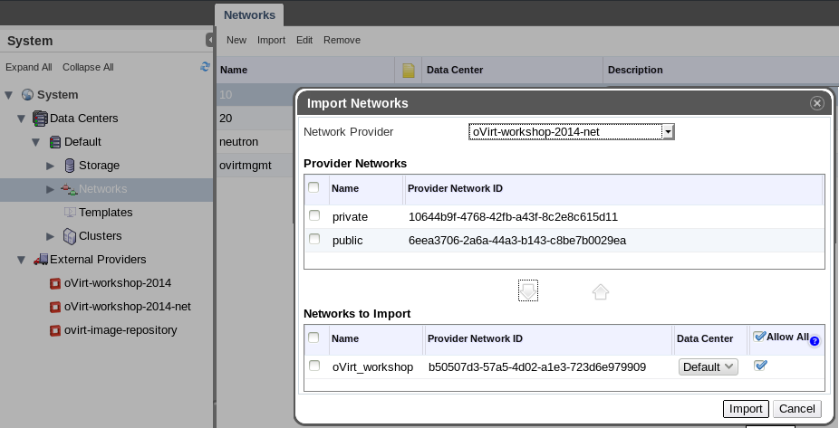

integration
Created by
Antoni Segura Puimedon
/
@celebdor
Virtual private datacenter management
KVM as the target hypervisor (x86_64|ppc|ppc64)
VMs usually special!
Cloud computing solution
Multiple hypervisors
KVM (x86_64)
Hyper-V
VMware
XenServer
Typically disposable VMs
External providers
3rd party products that provide core entities:
Hosts
Network
Storage domains
Configure once, use everywhere
Example providers...
Image Service - Glance
Introduction
Virtual disk images services:
discovery
registration
delivery
RESTful API for metadata and image retrieval
Varied backing storage possibilities:
local fs
Swift
S3
rbd
cinder
vsphere
Formats
Virtual disk formats:
raw
qcow2 - qemu
vdi - VirtualBox, qemu
iso
vhd, vmdk - MS, VMware, Xen
aki, ari, ami - Amazon
Container formats (with VM metadata):
bare (no metadata)
ovf
aki, ari, ami - Amazon
ova (tarred ovf)
oVirt current use cases
Import/Export disk images/templates
Backing up unlimited amount of VM disks
oVirt future use cases
Store ISOs and use them natively in oVirt VMs
Import/Export full VMs/templates with:
Complete VM definition
Multiple disks
Snapshots
Connecting to oVirt
Image discovery
Image importing
Image importing
Image exporting
Image exporting
Image exporting
oVirt Image repository
Current limitations
Not possible to export with multiple volumes
Snapshotted disks
Thin-provisioned over a template
No live VM export
No raw image sparseness supported
No image download resuming capability
Future
Delete images
online snapshot squashing
Integrated WebUI upload/download
Consume ISOs natively
Full VM import/export
Network Service - Neutron
Introduction
Networking as a service:
Layer 2
Layer 3
Load Balancing
Firewall
Tunneling
VPN
RESTful API for metadata and image retrieval
Plugins:
Open vSwitch
Cisco UCS
Linux Bridge
Modular Layer 2
etc
Architecture
Advantages
Overlay networks
IP address management
Security groups
L3-L7 services
Best of both worlds
Host networking: oVirt
VM networking: Neutron
oVirt current use cases
Import/Export networks
Create subnets with IPAM
Attach vNics to ports
Overlay networks*
Connecting to oVirt
Connecting to oVirt
Network importing

Network importing
Network creation
Subnet creation
Network creation
Host configuration
vNic profile
vNic creating
Neutron appliance
Ready made Neutron Service VM in four steps
Import image from oVirt's public glance
Create a VM from it with two vNics
Add it as a provider
Host agent configuration
Based on Centos 7
Running IceHouse RDO's Neutron
Future
Seamless tunneling integration
Leveraging more XaaS
Enhancing Neutron vendor plugin integration
More info
Glance integration deep dive -
http://youtu.be/_Nyi1xyiQnY
Neutron integration deep dive -
http://youtu.be/S16AfFylcHk
Neutron appliance demo -
http://youtu.be/naLFSFwHI94
http://www.ovirt.org/OVirt_Neutron_GRE_Integration_-_How_To
http://www.ovirt.org/Features/NeutronVirtualAppliance
Questions
apuimedo/celebdor @ #ovirt@irc.oftc.net